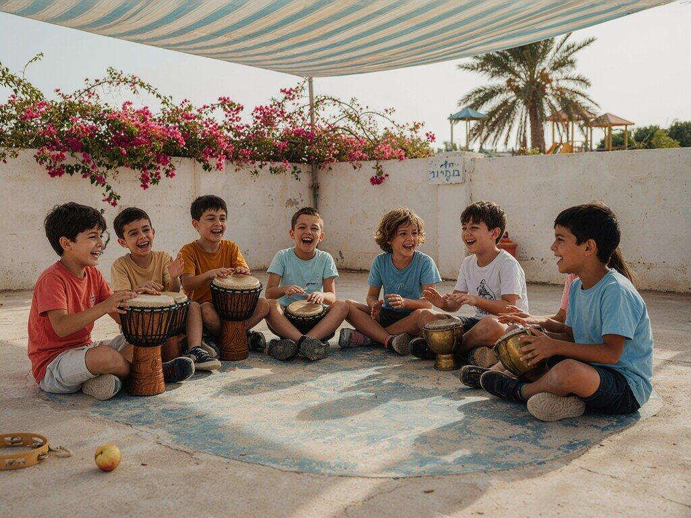
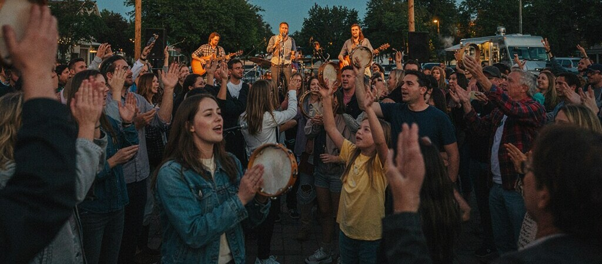

Baruch Hazan · Music & Sound
פעילויות לילדים
סדנאות קצב, סדנה זוהרת באולטרה סגול, ימי הולדת עם תופים וחבילות לקייטנות. ברוך מביא את כל הכלים.

ילדיםמבוגרים
סדנה
סדנת קצב: דרבוקות וכלי הקשה
כל הקבוצה מתופפת יחד, מהדקה הראשונה
לפרטים ←
ילדיםמבוגרים
סדנה
סדנת קצב באולטרה סגול
מתופפים בחושך, והכול זוהר
לפרטים ←
ילדיםמבוגרים
מופע
מופע קבלת שבת
שירי שבת בגרסאות מיוחדות ושמחות
לפרטים ←
ילדיםמבוגרים
מופע
שירה בציבור עם סדנת קצב
הקהל שר, מתופף ומשתתף
לפרטים ←
ילדים
קייטנות
חבילות לקייטנות
יום פעילות שלם, מספק אחד
לפרטים ←ילדים
יום הולדת
יום הולדת עם תופים
סדנת קצב שמח לגילאי 3–7
לפרטים ←יצירת קשר
בואו נדבר על האירוע שלכם
ספרו לי מה אתם מתכננים: מי הקהל, כמה משתתפים ואיפה. אחזור אליכם עם הצעה שמתאימה בדיוק לכם.